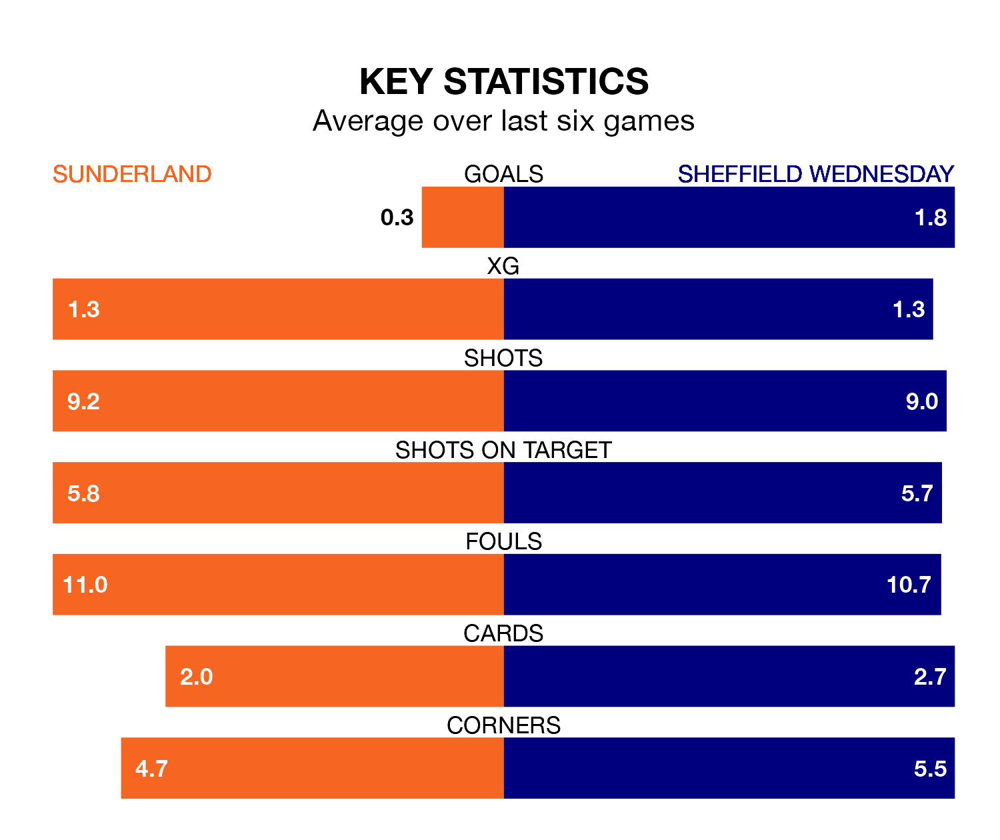

Sheffield Wednesday face Sunderland on Saturday seeking to protect their long unbeaten run in EFL Championship.
The Owls are unbeaten in five, with three wins and two draws, ahead of the 12.30pm kick-off.
They face a Sunderland team who have won one and drawn two over the same number of games.
In the last 10 years, Sunderland and Wednesday have played each other on nine occasions. Sunderland won three of them, Wednesday four, and they drew twice.
On average, the Black Cats scored 1.3 goals and the Owls 1.3 in those matches.
Their last meeting was on September 29, when Sunderland won 3-0 away.
Wednesday are 20th in the table after 45 games, of which they have won 14 and drawn eight, earning 50 points.
Sunderland are five places ahead of the Owls in 15th, with 16 wins and eight draws putting them on 56 points.
In Anthony Patterson, the Black Cats can rely on one of the league's safest pair of hands. He has kept 13 clean sheets in his 45 appearances this season in EFL Championship.
In the away side's net, James Beadle has seven clean sheets in 18 games. He has conceded a goal every 70 minutes, 10% more often than the 79 minutes between goals for Patterson.
With 42 goals in 45 games so far this season, Wednesday are the league's second-lowest scorers with 0.9 goals per game. And they are conceding more than average, letting in 68 goals at a rate of 1.5 per game.
The hosts are also below average scorers, with 1.2 goals per game, compared to a league average of 1.3. They have also conceded 1.2 goals per game.
Sunderland's last match was on Saturday, a 1-0 loss against Watford.
Wednesday beat West Bromwich Albion 3-0 last time out, also on Saturday, with Anthony Musaba, Ike Ugbo and Josh Windass on the scoresheet.
Saturday's match will be refereed by Gavin Ward, who has taken charge of 23 EFL Championship games so far this season, issuing two red cards and booking 88 players. He has awarded two penalties.
The last Sunderland game Ward refereed was a 1-0 away loss to Huddersfield Town on February 14. His last Wednesday match was their 4-0 loss at home against Millwall on November 11.
Updated: 12:00 (UTC), 02/05/24